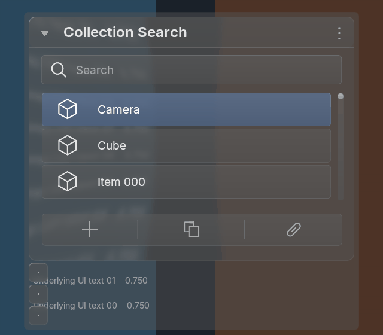
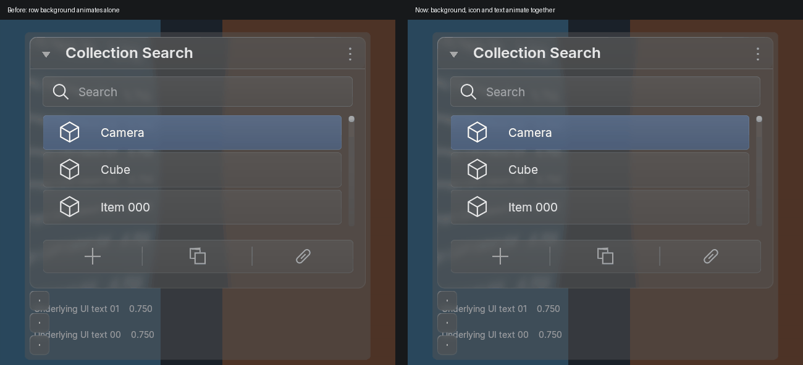
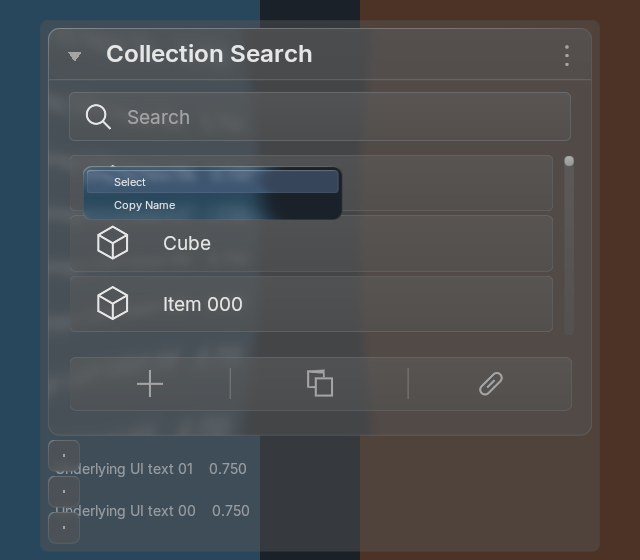

Actual Blender output with 503 candidates, virtual scrolling and three standalone component decorators. The shared BVT glass, theme, typography and source spring remain in use. Search now validates the source, candidate and property value before committing, with rollback on host rejection.


Both sides are actual Blender renders under identical input, theme, scale and backdrop. The current implementation moves the row icon and label with its background. Resting pixels are byte-identical. This is an implementation comparison, not a generated-reference approval.

Real window tests cover End/Enter selection, typed suggestions, right-click cancellation, candidate context menus and component keying. Both tested versions match all 100 sampled frames with native BLF batching enabled and disabled. Capture, strong blur, offscreen, font and recorded shader/batch resources remain stable.
Parity remains partial. Non-ID pointer targets, compact search fields, native ranking/icon variants, complete focus traversal and exact generated-reference/theme/DPI acceptance remain open. Non-ID collection changes require host refresh; no polling timer is added.
5.2 capture and timing · 5.1 capture and timing · RNA behavior · Actual window input · Official source audit · Integration and remaining gaps · Earlier pointer/decorator pass